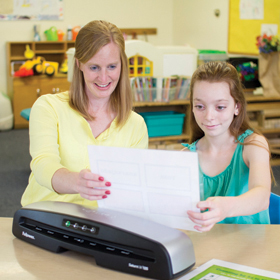

Laminating Tips and Projects
Once you learn how to laminate, you can protect important documents and actually create laminated documents that have many uses.
For Perfect Lamination Every time:
- Insert item to be laminated into pouch
- When laminator is ready, feed pouch into machine sealed edge first
- Your document is laminated. Remove immediately and let it cool
Tips:
- Always put item in a pouch. Never laminate an empty pouch
- Trim excess pouch material from around your item after laminating and cooling
- Before laminating valuable items, do a test run with an item similar in size and thickness
- Use a dry erase marker for writing on laminated pouches
- Always put the item to be laminated in the right size pouch
- Position item in pouch against leading sealed edge leaving less than an ¼” between item and sealed edge
Laminators have the dual value of creating durable, waterproof, customized documents for home or office projects. Here are two ideas:
For the Office - At-A-Glance Desktop Reference Guide
- Assemble commonly used reference documents on a 11”x17” printout
- Laminate with a machine that accommodates larger documents
- Keep your customized At-A-Glance Guide right on your desk
- Other Applications - Marketing Materials, Training Tools, Signs, Displays, Luggage Tags and Menus
You now have all your reference information at your fingertips. Your custom guide is spill resistant and easily wipes clean.
For the Home - Create customized placemats for the kids.
- Let them draw and write on 11”x17” paper
- Laminate their artwork for waterproof and stain resistant personal place mats
- Other Applications - Flash Cards, Recipe Cards, Scrapbooking, Certificates and Photographs